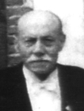
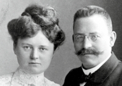
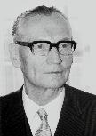
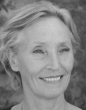

-
⇒ Fahle-Drosemeyer
|
Anton Joseph Fahle
Tagelöhner, "ex Rüden"
* 1756 (err.), + Soest 16.2.1811 (55)
"hinterl. seine Witwe"
nach P.-W. Vahle auch identisch mit:
Franz Fahle oo Soest St.Patr. 6.9.1792 A. Cath. Marg. Elisabeth Stracke E: Joh. Theodor Stracke, Clara Marg. Kayser ~ Soest St.Patr. 10.11.1771, [] Soest 27.3.1816 (45) Anm.: "ist aus Armen Mitteln beerdigt";-
Georg Wilhelm Arnold Anton Fahle/Vahle
Leineweber zu Soest
*/~ Soest 13./16.1.1793
E: Anton Josef Fahle, Elisabeth Stracke
+ 3.7.1849
E: bei I. oo: Anton Vahle, Elisabeth Stracke;
E: bei II. oo: Franz Vahle, Elisabeth Stracke
-
oo I. Soest 23.8.1814 (Georg Wilhelm Fahle)/
Soest Maria z.W. (ev) 25.8.1814 (Anthon Fahle)
Sophia Wilhelmina Kerstin
* 1783/1784 (errechnet: bei Heirat 30)
+ vor 5/1833 (Wiederheirat des Ehemanns)
E: Georg Wilhelm Kerstin,
(Anna) Emerentia Elisabeth Gudenoge,
diese ~ Soest St.Petri 24.8.1760,
V: Johann Henrich Gudenoge
-
Franz Andreas Christoph Gerhard Vahle
*/~ Soest Maria z.W. (ev.) 8./20.8.1815
Sophia Margaretha Dorothea
Christina Elisabeth Vahle ~ Soest Maria z.W. (ev.) 6.1.1817 Johann Heinrich Vahle ~ Soest Maria z.W. (ev.) 19.3.1819 Maria Catharina Vahle ~ Soest Maria z.W. (ev.) 9.11.1820 Johannes Franz Vahle ~ Soest Maria z.W. (ev.) 2.9.1824 Maria Christina Vahle ~ Soest Maria z.W. (ev.) 11.6.1826
-
Franz Andreas Christoph Gerhard Vahle
*/~ Soest Maria z.W. (ev.) 8./20.8.1815
Sophia Margaretha Dorothea
-
oo II. Soest St.Petri (ev) / Maria z.W. (ev) 6./7.5.1833
Sophie Margarethe (Catharina Elisabeth) Holthey
*/~ Soest, Maria z.W. 27.3./4.4.1805
+ 1853
E: Andreas Wilhelm Holthey/ei
oo Maria z.W. 24.5.1804 Florentine Gudenoge,
diese * 1779, V: Andreas Gudenoge
- NN (w) ~ Soest, Maria z.W. (ev) */~/+ 27.2.1834 Anton Wilhelm Vahle ~ Soest, Maria z.W. (ev) *24.4./~13.5.1835 + 1852 (17 J.) Wilhelmine Sophie Vahle ~ Soest, Maria z.W. (ev) *15./~21./+22.10.1837
-
Carl Andreas Franz Thomas Gerhard Vahle
* 9.5.1839
~ Soest, Maria z.W. (ev) und
Horn-Millinghausen (kath) 20.5.1839
+ 7/1919
oo Münster (Stadt) ev. 27.8.1868
Lisette Christine Caroline Steinhaus
*/~ Dortmund Aplerbeck, ev. 27.9./18.10.1842
Eltern: Friedrich Steinhaus, Lisette Hei(d)tmann
+ Dortmund 16.3.1919
-
Friedrich "Fritz" Carl Vahle

Dr. med., Assistent am Hygiene-Institut, praktischer Arzt und Kreiswundarzt in Marburg, sp. Medizinalrat und praktischer Arzt in Frankenberg/Eder; dort Stadtverordneter und 1949 Ehrenbürger; Mitglied der Freimaurerloge "Marc Aurel zum flammenden Stern" in Marburg; Dr.-Vahle-Straße und Flurname Vahle-Wäldchen in Frankenberg */~ Paderborn ev 13.6./8.7.1869 + Marburg 1951 oo ... Henny Halster * 27.4.1860-
(Adoptivsohn)
Johannes Vahle-Hinz, Dr.
+ 1969
Arzt in Frankenberg
oo um 1945 Petra Petersen, Dr.
* Hamburg 24.8.1923, + Hamburg 2.3.2018
Psychotherapeutin
ehrenamtl. Tätigkeiten im Hospiz,
beim Lebenshilfewerk, beim Treffpunkt
f. psych. Kranke in Frankenberg;
BVK 2004
- Kinder: Hellmut Vahle-Hinz, Dr. med. (*1945/46) Sunhild Vahle-Hinz (Fischer), Dr. med. (*1947) Christiane Vahle-Hinz, Prof. Dr. rer. nat.
-
(Adoptivsohn)
Johannes Vahle-Hinz, Dr.
+ 1969
Arzt in Frankenberg
oo um 1945 Petra Petersen, Dr.
* Hamburg 24.8.1923, + Hamburg 2.3.2018
Psychotherapeutin
ehrenamtl. Tätigkeiten im Hospiz,
beim Lebenshilfewerk, beim Treffpunkt
f. psych. Kranke in Frankenberg;
BVK 2004
-
Paul Friedrich Richard Vahle

Foto: Paul und Helene Vahle Ingenieur, Fabrikant von Stromschienen in Dortmund, 1921: Oesterholzstr. 122 */~ Paderborn ev 1.2./16.3.1871 + 29.8.1926 oo I. ... Emma Junius/Julius * 6.3.1881, + 12.5.1904 oo II. 1904 oder danach Helene Schwier * Osnabrück 27.5.1878- Friedrich Karl * Dortmund 4.4.1908 + Dortmund 22.7.1936 (28 J.)
-
Paul Werner Vahle

Unternehmer in Dortmund u. Kamen Paul Vahle GmbH & Co. KG, 1932 Übernahme des väterlichen Betriebs, 1956 Werk in Kamen * Dortmund 11.5.1909 + 1.8.1985 oo 25.4.1939 Maria Wilhelmine Hötte * 23.12.1910- Krista Vahle * 29.8.1943 Meerbusch-Büderich, oo Horst Hitzbleck
-
Annette Vahle

* 25.3.1952, Berlin, Künstlerin Tochter: Katinka Vahle, Berlin -
Werner Gerhard Josef Vahle
* 12.9.1953, Montzen/Belgien
Maschinenbauingenieur,
Büro in Aachen Töchter: Marlen, Pauline, Lilian
- Erich Gerhard Vahle * Dortmund 12.5.1912
-
Carl Heinrich Vahle
Oberingenieur in Dortmund
*/~ Paderborn ev 9.8./5.9.1872
oo I. ...
Elisabeth Keitel
* 26.7.1876, + 9.10.1928
oo II. nach 1928
Steph. Mieka/Micka/Micke
* 2.8.1881
- 2 Söhne * in Kreuzwald (=Creutzwald in Lothringen?, früher Kohlebergbau) Carl Vahle Fritz Vahle
- Cläre Vahle * 5.4.1876 oo ... Carl Ferdinand Bernhard Hozzel Oberstudiendirektor in Berlin * Braunschweig 27.7.1878 (ref.) Eltern: Kaufm. Emil Hozzel, Ottilie Vollmann
-
Max Vahle
Zahnarzt in Dortmund
* 2.9.1883
oo ...
Luise Klöpper
- (Abstammung nicht belegt) Max Fahle 1921: Ober-Ingen., Do., Flurstr. 188 Karl Vahle, Dr. phil. 1921: Zahnarzt in Do., Königswall 20
-
Friedrich "Fritz" Carl Vahle
-
Florentine Gertrud Margarethe Sophia
Elisabeth Clara Dorothea Vahle ~ Soest, Maria z.W. (ev) und Horn-Millinghausen (kath) 9.9.1841 oo Münster (Stadt) ev 9.6.1868 Friedrich Wilhelm Carl Fro(h)böse | Louise Marie Caroline Sophie Froböse */~ Dortmund St.Reinoldi ev 4./10.10.1872 Friedrich Carl August Heinrich Paul Froböse */~ Dortmund St.Reinoldi ev 4.11.1875/6.1.1876 Maria Alwine Margarethe Froböse */~ Dortmund St.Petri ev 8./12.8.1877
-
oo I. Soest 23.8.1814 (Georg Wilhelm Fahle)/
Soest Maria z.W. (ev) 25.8.1814 (Anthon Fahle)
Sophia Wilhelmina Kerstin
* 1783/1784 (errechnet: bei Heirat 30)
+ vor 5/1833 (Wiederheirat des Ehemanns)
E: Georg Wilhelm Kerstin,
(Anna) Emerentia Elisabeth Gudenoge,
diese ~ Soest St.Petri 24.8.1760,
V: Johann Henrich Gudenoge
- Catharina Sophia Margaretha Elisabeth Fahle */~ Soest 1./6.1.1799 E: Anton Fahle, Elisabeth Stracke
- Franz Mathias Georg Andreas Fahle */~ Soest 7./11.6.1801 E: Franz Fahle, Anna Maria Elisabeth Stracke
-
Heinrich Franz Wilhelm Fahle
*/~ Soest 7./10.1.1805
E: Franz Anton Fahle, Elisabeth Stracke
-
oo Iserlohn (kath.) 25./27.9.1834
Maria Magdalena "Helene" Was(s)muth
* 1808/09 (bei Heirat: 25J.)
E: Johannes Wassmuth, Johanette Deichmann
-
Sophia (Sophie) Maria Francisca
Fahle/Vahle */~ Iserlohn (kath.) 24.1./4.2.1838 E: Franz Fahle, Helena Wassmuth oo Iserlohn Ob.Stadtkirche 15.10.1867 Johann Conrad Sommer E: Johannes Sommer,
Maria Catharine Huhnes -
Stephan Friedrich Gustav Fahle/Vahle
*/~ Iserlohn (kath.) 17./30.5.1841
E: Franz Fahle, Helena Wasmuth
oo I. Iserlohn 7.1.1863 (30.10.1862?)
Maria Teppe
* 1820 (?)
oo II. Bismarck(Gelsenk.) 30.8.1885
Sophie Held
E: Wilhelm Arnold Held,
Wilhelmine Widerstein * 1849- August Gustav Vahle */~ Iserlohn 17.8./22.11.1863 +/[] Iserlohn 17./20.3.1864 Gustav Friedrich Wilhelm Vahle */~ Iserlohn 22.1./17.2.1865 +/[] Iserlohn 10./13.7.1866 Louise Maria Vahle */~ Iserlohn 18.12.1866/24.2.1867
-
Sophia (Sophie) Maria Francisca
-
oo Iserlohn (kath.) 25./27.9.1834
Maria Magdalena "Helene" Was(s)muth
* 1808/09 (bei Heirat: 25J.)
E: Johannes Wassmuth, Johanette Deichmann
-
Georg Wilhelm Arnold Anton Fahle/Vahle
Leineweber zu Soest
*/~ Soest 13./16.1.1793
E: Anton Josef Fahle, Elisabeth Stracke
+ 3.7.1849
E: bei I. oo: Anton Vahle, Elisabeth Stracke;
E: bei II. oo: Franz Vahle, Elisabeth Stracke